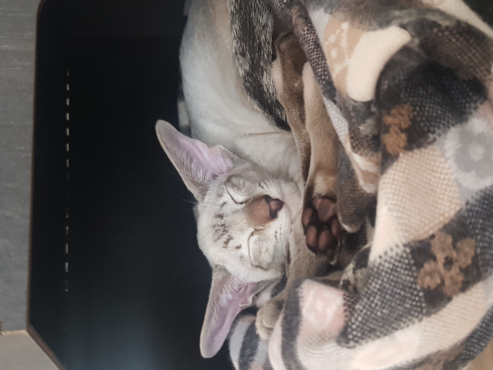
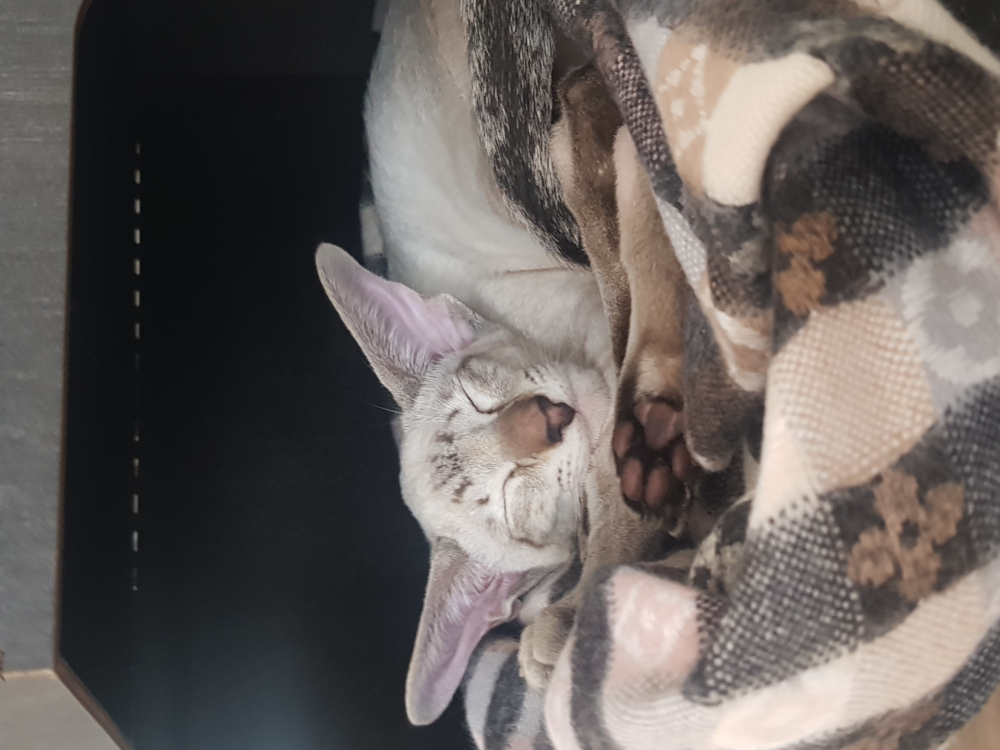

Красавец котик хоть куда
Будить он любит по утрам.
Зачем ему игрушки,
Коль есть такие сплюшки!
Лежат они в постели
Тыг-дыг, тыг-дыг, парам-парам!
Я спать вам ни за что не дам!
А ну, вставайте люди!
Не то вам хуже будет!
Могу я делать кусь и этим я горжусь!
А так же громко петь и бегать и шуметь!
Кусь-мур-мя, кусь-кусь- мурмя-мя!
Спасите же кота, кормить меня пора!

В гости приходила дамочка с хвостом
Та, что во дворе у нас живёт давно.
Лапкой мимоходом Джастина толкнула,
И задравши хвостик мимо прошмыгнула.
Джастин от испуга стал кричать дурниной
Дружба не сложилась с этой дамой милой.
Под кроватью долго кот сидел обиженный,
Мне, по морде лапой, где же это виданно!

Зачем меня хорошего на улицу водили?
Зачем меня красивого в ошейник посадили?
Я котик, котик, котик, я точно не собака!
Мне нужно на кроватке лежать и наслаждаться!
Какие там деревья, какая там трава?
Не нужно так, прошу я вас, пугать меня-кота!
Вот если б был собакой я, тогда другое дело!
Ходил бы я по улицам довольно таки смело!
И был бы самым важным псом среди дворовых псов
А так я просто котик, гроза других котов!
Открыл глаза и сразу понял,
что мне давно играть пора
Хочу, что б кто-то мячик бросил,
Быстрее бросил для меня
Ну, даже если и не бросит
То это просто ерунда
Сейчас поймаю свою мышку
И подарю её друзьям
Я знаю точно, что я лучший
В вопросе поиска мышей
Одну я спрятал под диваном,
Искать что б было веселей
За холодильником другая
Давненько ждет меня с тоской
Когда нибудь ее поймаю
И все узнают-я герой!